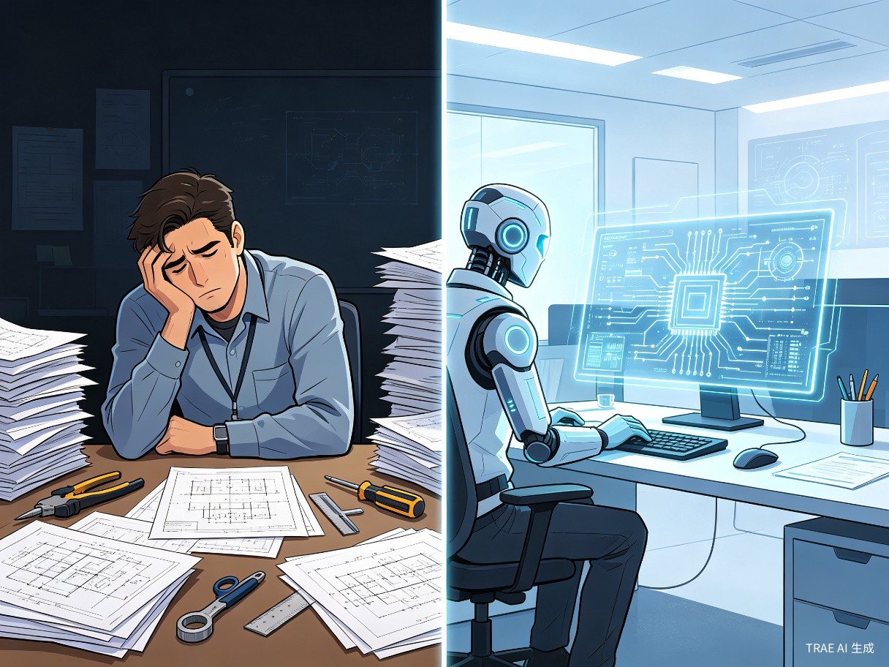
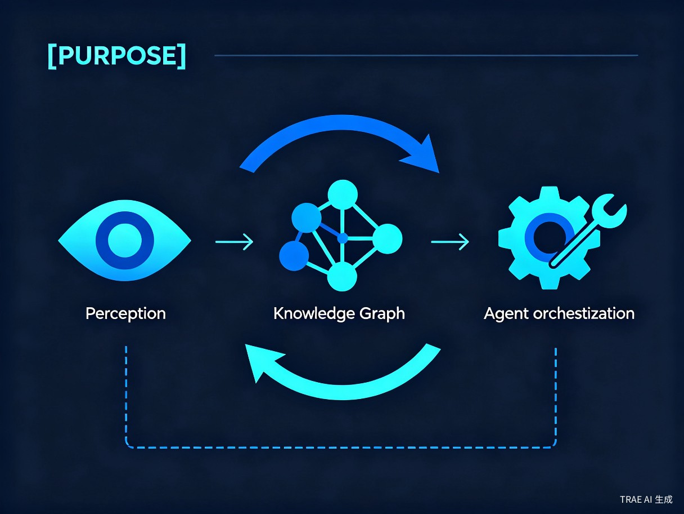

基于大模型与知识图谱，让每一位工程师都拥有资深专家的设计能力
「世界很大，放手去造」— 用AI重新定义芯片设计
一个面向模拟芯片设计领域的AI智能体平台，用大模型+知识图谱解决行业核心痛点
IC擎芯智能体 —— 国内首个AI驱动的模拟/混合信号芯片智能辅助设计平台，融合大模型推理、知识图谱RAG、电路仿真验证与ReAct智能体编排。
模拟IC设计长期面临三大瓶颈：专家经验高度依赖（培养周期3~5年）、自动化程度极低（<30%）、知识传承断代流失（年均离职率~15%）。全球芯片需求爆发与人才严重短缺的矛盾日益尖锐。
作为深耕芯片行业的从业者，我深刻体会到：每一个电路拓扑选择、每一组参数 sizing 都依赖资深工程师的直觉与经验。当大模型技术迎来突破，我开始思考：能否让 AI 不仅辅助代码编写，更能理解电路原理、调用仿真工具、沉淀设计知识？
产品形态：基于大语言模型（LLM）+ 知识图谱（KG）+ ReAct 智能体编排的 Web 平台，提供全自动电路设计（Auto-Design）、交互式设计助手（Copilot）和设计审查助手（Review）三大核心工作模式，将原本需要 2~4 周的工程师工作压缩至数小时内完成。

面向模拟/混合信号芯片设计领域的核心用户群体
从事电源管理、信号链、射频前端等模拟电路设计的专业工程师，需要快速完成拓扑选型与参数 sizing。
面临项目周期压力与人才梯队建设挑战，希望降低对个别资深专家的依赖，提升团队整体产出效率。
从事集成电路教学与科研的师生，需要直观、可交互的电路设计教学工具，加速人才培养。
资源有限但需快速推出产品，希望以较低成本获得接近资深专家水平的设计辅助能力。
模拟设计依赖资深工程师直觉，年轻设计师成长周期长达3~5年起，人才断层严重。EDA工具在架构层面辅助几乎为零。
数字前端早已实现RTL自动综合，模拟端仍以全定制手工设计为主流，效率低下。核心矛盾在于缺乏智能化的设计辅助工具。
设计know-how随人员流动大量流失，芯片行业离职率高导致经验无法沉淀为组织资产，企业反复「重新发明轮子」。
从商业价值、效率提升、社会价值三个维度阐述创意价值
全球 EDA 市场规模超过 900 亿美元，其中模拟/混合信号 EDA 增速高于数字 EDA。IC擎芯智能体采用 SaaS 订阅 + 私有化部署 + 技术服务的多元商业模式，预计运营第 3 年实现盈亏平衡。
将 2~4 周 的工程师手工设计工作压缩至 数小时 内完成；通过知识图谱种子组装优先 + 确定性网表来源约束，实现 98%+ 拓扑正确率；ReAct 智能体 17 个独立工具编排，搜索空间缩减 40%，收敛速度提升 2 倍。
芯片是信息产业的「粮食」，模拟芯片更是连接物理世界与数字世界的桥梁。 在中美科技竞争加剧、国产替代迫在眉睫的背景下，IC擎芯智能体通过 AI 技术降低模拟芯片设计门槛、加速人才培养、沉淀组织知识资产，直接服务于国家半导体产业自主可控战略。
通过知识图谱将分散的设计经验结构化、标准化，让组织的知识资产不再随人员流动而流失，实现真正的经验沉淀。让每一位工程师都拥有资深专家的设计能力。
融合大模型推理 · 知识图谱RAG · 电路仿真验证 · ReAct智能体编排

LangGraph StateGraph 驱动 · 17个独立工具 · checkpoint断点恢复 · interrupt人机交互
LLM分析 + Ngspice验证 · 5轮轻量迭代 · 自动修正 · 防过度修正/不收敛诊断/早停机制
DeepSeek-R1 / Qwen3 双引擎 · 智能路由 · Prompt模板库 · 按需调用弹性扩展
Neo4j存储 · Local/Global双标注体系 · WHD多条件检索 · BO优化 · 大模型认知推理
Qwen3-VL-32B + DeepSeek-R1 · 多模态视觉理解 · CircuitIR V2.0 两层结构
三大核心工作模式，覆盖芯片设计全流程
Phase 1 — 输入规格→输出经过仿真验证的 sized SPICE 网表。将2~4周工程师工作压缩至数小时内完成，实现设计效率的数量级提升。
Phase 1 — 自然语言对话式辅助：拓扑推荐/参数建议/Debug 诊断/跨工艺迁移/Trade-off 分析。让初级工程师也能做出专家级决策。
Phase 2 — 上传 Netlist→自动检查拓扑完整性/DRC 违规/约束违反/反模式检测→分级审查报告。质量守门员，降低流片风险。
音频编解码芯片 · 电源管理 IC(PMIC) · 触控/指纹传感器
车规级运放/比较器 · 电池管理系统(BMS) · 车载通信接口
高精度 ADC/DAC · 工业传感器接口 · 隔离器/栅极驱动
超低功耗 LDO/Bandgap · 能量收集电路 · 无线射频前端
生物电信号采集 · 植入式设备模拟前端 · 便携式诊断仪器
$250亿+ 模拟/混合信号EDA市场，增速高于数字EDA
| 维度 | 传统EDA工具 | 国外竞品 | IC擎芯智能体 |
|---|---|---|---|
| AI 能力 | 无/极弱 | 基础 ML 模型 | LLM + KG + ReAct |
| 中文支持 | 英文界面为主 | 英文 | 原生中文 |
| 设计范式 | 手工操作辅助 | 数字前端为主 | 模拟端智能化突破 |
| 知识沉淀 | 无 | 有限 | 结构化知识图谱 |
| 部署门槛 | 百万级授权费 | 高 | 本地+云端灵活 |
| 定制灵活性 | 低 | 中 | 高度可配置 |
从MVP验证到生态拓展的清晰路径
ReAct 架构 + 17 工具完成 · Web UI 产品化界面 · CircuitIR V2.0 + KG 种子入库 · 3 种运放设计 Demo 成功
React 前端 + 端到端闭环 · Ngspice 仿真闭环 + VLM 升级 · 电路库扩容至 50+ · 设计审查 Alpha 版
SaaS 订阅服务上线 · 多用户/多项目管理 · 开放 API 第三方集成 · 商业化规模运营
开放 API 第三方集成 · 社区贡献知识共建 · 商业化规模运营 · 预计运营第 3 年实现盈亏平衡
小而精的核心团队，聚焦执行
1 人全职，已就位 ✓。负责技术方向决策、项目管理、对外协调。
2 人全职（核心需求）。负责 Prompt 工程、检索算法、优化器、LLM 集成。
2 人全职/兼职（Phase 2 起）。负责 API 开发、Neo4j 运维、CI/CD、部署。
2 人顾问合作兼职。负责 Local 标注审核、sizing 约束编写、设计把关。
IC擎芯智能体不仅是一个工具，更是模拟芯片设计范式变革的起点。我们期待在 TRAE AI 创造力大赛的舞台上，与各位评委和创作者一起，探索 AI 与硬件设计的无限可能。
查看完整提案